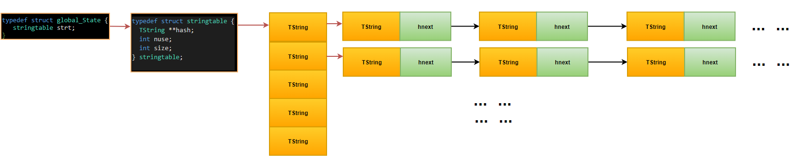
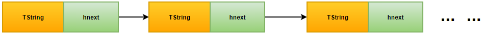
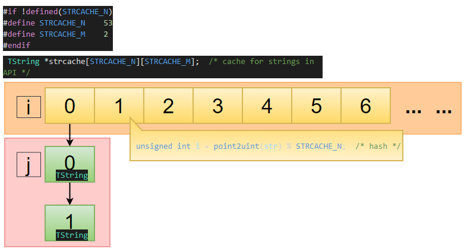
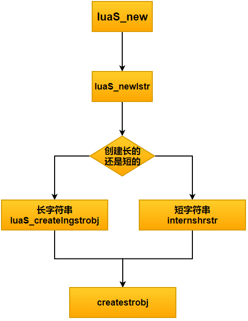
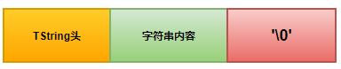
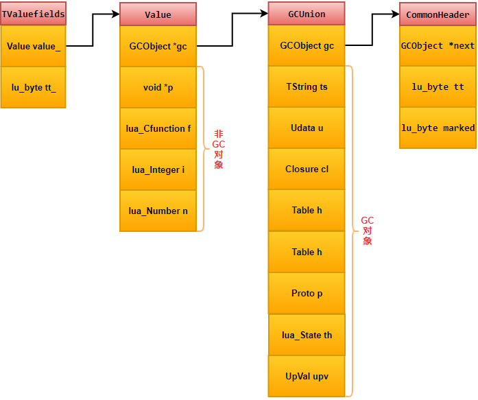
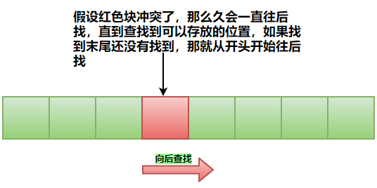
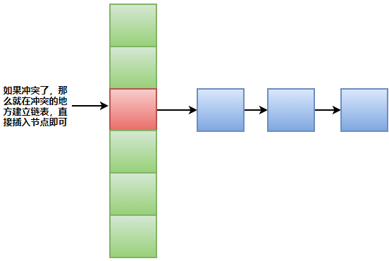

基础类型
| 定义 | 解释 |
|---|---|
| LUA_TNONE | 判断这个变量是否等于为空使用的，lua内部使用，注意不是和nil类型不等价 |
| LUA_TNIL | 全局变量没被复制就是nil类型，删除变量会被赋值成nil类型，nil类型就nil一个值，表示变量是否被赋值，变量赋值成nil也表示删除变量 |
| LUA_TBOOLEAN | false和nil为假 其他都为真(包括0) |
| LUA_TLIGHTUSERDATA | 见1.1 表 |
| LUA_TNUMBER | 所有数字，int float double 类型都为number类型 number类型可以和全是数字的字符串进行计算，字符串会进行类型转换 |
| LUA_TSTRING | 一但被赋值就不能被修改，可以通过方法string.gsub()来修改；分为长字符串和短字符串（小于等于40字符） |
| LUA_TTABLE | 数组容器 |
| LUA_TFUNCTION | 函数 |
| LUA_TUSERDAT | 见1.1 表 |
| LUA_TTHREAD | 协程，只是拷贝了一个栈空间 |
| LUA_NUMTAGS | tag 总数 |
LUA_TTHREAD
- 代表协程类型
- 除了主线程以外，其它线程和其它Lua对象一样都是垃圾回收的对象。当新建一个线程时，线程会压入栈，这样能确保新线程不会成为垃圾
- 每次调用lua_newstate的时候都会创建一个新的luastate,不同的luastate完全独立，之间不共享任何数据
- 协程提供了新的api接口和lua_resetthread,coroutine.close 会使协程进入死亡状态,并且关闭所有的close变量
full userdata和light userdata区别
| 区别 | full userdata | light userdata |
|---|---|---|
| 作用 | 通常用来表示C中的结构体一小段固定的内存区域 | 通常用来表示C中的指针(void *) |
| 内存管理 | 由Lua的垃圾回收器管理 | 使用者需要关心其内存 |
| 元表 | 有独立的元表 | 没有独立的元表 |
| 创建 | void *lua_newuserdata(lua_State *L, size_t size) | lua_pushlightuserdata(lua_State *L, void *p); |
full userdata
//c文件
//#include <string.h>
extern "C" {
#include "lua.h"
#include "lauxlib.h"
#include "lualib.h"
}
#include <iostream>
using namespace std;
static struct StudentTag
{
char *strName; // 学生姓名
char *strNum; // 学号
int iSex; // 学生性别
int iAge; // 学生年龄
}T;
static int Student(lua_State *L)
{
size_t iBytes = sizeof(struct StudentTag);
struct StudentTag *pStudent;
pStudent = (struct StudentTag *)lua_newuserdata(L, iBytes);
//设置元表
luaL_getmetatable(L, "Student");
lua_setmetatable(L, -2);
//lua_pushnumber(L, 123);
return 1; // 新的userdata已经在栈上了
}
static int GetName(lua_State *L)
{
struct StudentTag *pStudent = (struct StudentTag *)luaL_checkudata(L, 1, "Student");
lua_pushstring(L, pStudent->strName);
return 1;
}
static int SetName(lua_State *L)
{
// 第一个参数是userdata
struct StudentTag *pStudent = (struct StudentTag *)luaL_checkudata(L, 1, "Student");
// 第二个参数是一个字符串
const char *pName = luaL_checkstring(L, 2);
luaL_argcheck(L, pName != NULL && pName != "", 2, "Wrong Parameter");
pStudent->strName =(char*) pName;
return 0;
}
static int GetAge(lua_State *L)
{
struct StudentTag *pStudent = (struct StudentTag *)luaL_checkudata(L, 1, "Student");
lua_pushinteger(L, pStudent->iAge);
return 1;
}
static int SetAge(lua_State *L)
{
struct StudentTag *pStudent = (struct StudentTag *)luaL_checkudata(L, 1, "Student");
int iAge = luaL_checkinteger(L, 2);
luaL_argcheck(L, iAge >= 6 && iAge <= 100, 2, "Wrong Parameter");
pStudent->iAge = iAge;
return 0;
}
static int GetSex(lua_State *L)
{
// 这里由你来补充
return 1;
}
static int SetSex(lua_State *L)
{
// 这里由你来补充
return 0;
}
static int GetNum(lua_State *L)
{
// 这里由你来补充
return 1;
}
static int SetNum(lua_State *L)
{
// 这里由你来补充
return 0;
}
static luaL_Reg arrayFunc_meta[] =
{
{ "getName", GetName },
{ "setName", SetName },
{ "getAge", GetAge },
{ "setAge", SetAge },
{ "getSex", GetSex },
{ "setSex", SetSex },
{ "getNum", GetNum },
{ "setNum", SetNum },
{ NULL, NULL }
};
static luaL_Reg arrayFunc[] =
{
{ "new", Student},
{ NULL, NULL }
};
extern "C" _declspec(dllexport) int luaopen_mytestlib(lua_State *L)
{
// 创建一个新的元表
luaL_newmetatable(L, "Student");
// 元表.__index = 元表
lua_pushvalue(L, -1);
lua_setfield(L, -2, "__index");
luaL_setfuncs(L, arrayFunc_meta, 0);
luaL_newlib(L, arrayFunc);
lua_pushvalue(L, -1);
lua_setglobal(L, "Sdudent"); /* the module name */
return 1;
}
-- lua 文件
require "mytestlib"
local objStudent = Sdudent.new()
objStudent:setName("果冻")
local strName = objStudent:getName()
print(strName )
for k,v in pairs(getmetatable(objStudent)) do
print(tostring(k),tostring(v))
end
light userdata
//C文件
#include <stdio.h>
#include <string>
#include <iostream>
using namespace std;
extern "C" {
#include "lua.h"
#include "lualib.h"
#include "lauxlib.h"
}
typedef struct
{
int x;
int y;
int z;
}TData;
static int getAttribute(lua_State* L)
{
TData *data = (TData*)lua_touserdata(L, 1);
std::string attribute = luaL_checkstring(L, 2);
int result = 0;
if (attribute == "x")
{
result = data->x;
}
else if (attribute == "y")
{
result = data->y;
}
else
{
result = data->z;
}
lua_pushnumber(L, result);
return 1;
}
static luaL_Reg dataLib[] = {
{ "__index", getAttribute },
{ NULL, NULL }
};
void getMetaTable(lua_State* L, luaL_Reg* methods)
{
lua_pushlightuserdata(L, methods);
lua_gettable(L, LUA_REGISTRYINDEX);
if (lua_isnil(L, -1)) {
/* not found */
lua_pop(L, 1);
lua_newtable(L);
luaL_setfuncs(L, methods, 0);
lua_pushlightuserdata(L, methods);
lua_pushvalue(L, -2);
lua_settable(L, LUA_REGISTRYINDEX);
}
}
int main()
{
const char* filename = "test.lua";
lua_State *lua = luaL_newstate();
if (lua == NULL)
{
fprintf(stderr, "open lua failed");
return -1;
}
luaL_openlibs(lua);
TData input = { 123, 231, 321 };
lua_pushlightuserdata(lua, &input);
getMetaTable(lua, dataLib);
lua_setmetatable(lua, -2);
lua_setglobal(lua, "input");
if (luaL_dofile(lua, filename))
{
//luaL_error(lua, "load file %s failed", filename);
}
lua_getglobal(lua, "data");
int output = lua_tointeger(lua, -1);
std::cout << output << std::endl;
return 0;
}
--lua文件
data = input.x;
print(data)
需要注意地方
| 序号 | 注意项 |
|---|---|
| 1 | Lua中变量没有预定义类型，每个变量可以包含任意类型的值，要用就直接赋值一种数据类型的值 |
| 2 | nil类型就nil一个值，表示变量是否被赋值，变量赋值成nil也表示删除变量 |
| 3 | 使用Type(xxx变量) 可以获取该变量的数据类型 |
| 4 | number 所有数字，int float double 类型等都为number类型了 |
| 5 | 字符串一旦赋值不能被修改，可以通过方法string.gsub()来修改，可以写成’xxas’单引号，但是建议用双引号”” |
| 6 | number类型可以和全是数字的字符串进行计算，字符串会进行类型转换 |
| 7 | .. 连接符号 ，可以连接字符串类型，也可以连接整形的变量，但是如果直接使用真实的数字要在后面加个空格，因为系统会把 数字.. 看出2个浮点 如 1..2 （错误写法） 1 ..2 (正确写法) |
| 8 | 类型不同，比较判断也不会相等,如number类型的123不等于string类型的123 |
| 9 | 计算运算符中取余可以和浮点数计算，可以精确到小数级别 |
| 10 | 关系运算符中~= 表示不等于，类似其他语言如c的 != |
| 11 | 逻辑运算符 and ，or ，not 对应 && ，|| , ！ |
| 12 | 表达式：a and b a为假则返回a 否则返回b， a or b a为真返回a否则返回b ,简单理解and就是先判断a a正确就继续判断b，如果b也正确返回btrue，则if(a and b) 为true ，这实际上也是&&的使用原理一样 ，如果a为假就是false直接返回a if(a and b) 就是false了 。 or 同理 |
| 13 | 赋值方式一：多个变量同时赋值，多的变量(变量个数多于值个数)默认为nil，少的变量(变量个数少于值个数)不做处理，可以类型混搭 |
| 14 | 局部变量 用local修饰声明 ，内存在栈上，在一个函数，代码块{ }内 函数，代码块结束，内存自动释放 |
| 15 | 全局变量在堆上，可以随时创建，程序结束，内存自动释放 |
| 16 | 控制语句上，有if for where 没有switch结构 |
| 17 | 控制语句上，不需要写 () {} {指代 ：then } 指代 ： end |
| 18 | 循环结构 while do end ,里面不能写() 以及 ++ – += 类似的运算符 |
| 19 | 循环结构 for 也不需要写() 也不在赋值除了对第一个赋值，其他都可以省略写默认写为 <= +xx 或 >= -xx |
| 20 | 函数的返回值和其他语言一样可以返回个值，变量。但是不同的是可以同时返回多个变量，进行多个赋值 |
| 21 | table可以有数组的形式，字典的形式，数组字典同时混合的形式 |
| 22 | print()打印会默认换行 |
| 23 | #号数组是计算数组容器table的下标个数，lua的数组容器下标从1开始计算递增，字典不包括key元素 |
| 24 | ipairs 仅仅遍历值，按照索引升序遍历，索引中断停止遍历。不能返回 nil,如果遇到 nil 则退出。它只能遍历到集合中出现的第一个不是整数的 key。 pairs 能遍历集合的所有元素。即 pairs 可以遍历集合中所有的 key，并且除了迭代器本身以及遍历表本身还可以返回 nil。 |
| 25 | lua布尔类型只有两个取值false和true. 但要注意lua中所有的值都可以作为条件. 在控制结构的条件中除了false和nil为假, 其他值都为真。lua认为 0 和 空字符串都是真！！ |
pairs和ipairs 例子比较
test = {["xxx"] = nil , tt = "tabao"}
for k , v in pairs(test) do
print(k,v)
end
输出： tt tabao
test = {nil = xxxx , tt = "tabao"}
for k , v in pairs(test) do
print(k,v)
end
输出：stdin:1: bad argument #1 to 'for iterator' (table expected, got nil)
stack traceback:
[C]: in function 'next'
stdin:1: in main chunk
[C]: in ?
local tab = {
[1] = "a",
[3] = "b",
[4] = "c"
}
for k, v in ipairs(tab) do
print(k, v)
end
输出：1 a ,在key等于2处断开
local tab= {
[2] = "a",
[3] = "b",
[4] = "c"
}
for k, v in ipairs(tab) do
print(k, v)
end
输出：什么都没输出，为什么？因为控制变量初始值是按升序来遍历的，当key为1时，value为nil，此时便停止了遍历， 所有什么结果都没输出。
for k, v in pairs(tab) do
print(k, v)
end
输出：2 a, 3 b, 4 c
local tab = {"a", "b", [3] = "c", ["two"] = "d"}
for i,v in ipairs(tab) do
print( tab [i] )
end
输出：a，b，c
for i,v in pairs(tab) do
print( tab [i] )
输出：a，b，c，d。
lua 模块 import 和 require 差异
载入一个模块
import() 与 require() 功能相同，但具有一定程度的自动化特性。
import支持相对路径的写法，一个点表示当前目录，两个点表示上一级目录，以此类推。
require 最好写成绝对路径的形式如：require "src.ui.common.FightPointAdd" or require "src/common/FightPointAdd"
import还有一个优势是假设：A/B/下有两个文件 c.lua,d.lua，如果在 c中用到了 d话,require( "A/B/d"),import(".d") ，如果后面目录结构改了 ,c,d都到了 A目录下,那对应的要修改 require("A/d) 而 import可以不用修改。
lua 正则表达式
测试工具地址:https://wiki.luatos.com/pages/emulator.html
下面的表列出了 Lua支持的所有字符类:
.任意字符%a字母%c控制字符%d数字%l小写字母%p标点字符%s空白符%u大写字母%w字母和数字%x十六进制数字%z代表0的字符
上面字符类的大写形式表示小写所代表的集合的补集。例如, %A非字母的字符:
print(string.gsub("hello, up-down!", "%A", "."))
--> hello..up.down. 4
数字 4不是字符串结果的一部分，他是 gsub返回的第二个结果，代表发生替换的次数.
lua特殊字符
( ) . % + - * ? [ ^ $
%用作特殊字符的转义字符，因此 %. 匹配点; %%匹配字符 % .转义字符 %不仅可以用来转义特殊字符，还可以用于所有的非字母的字符。当对一个字符有疑问的时候，为安全起见请使用转义字符转义他。
\ 是lua的转义字符
[%w_]将匹配字母数字和下划线
[01]匹配二进制数字，[%[%]]匹配一对方括号
第一个字符和最后一个字符之间用连字符 -连接表示这两个字符之间范围内的字符集合
%d表示 [0-9]
%x表示 [0-9a-fA-F]
查找八进制数:[0-7]
匹配任何非换行符户的字符: [^\n]
模式修饰符
+匹配前一字符1次或多次*匹配前一字符0次或多次-匹配前一字符0次或多次?匹配前一字符0次或1次
+匹配一个或多个字符，她总是进行最长的匹配. 比如，模式串 %a+匹配一个或多个字母或者一个单词 :
print(string.gsub("one, and two; and three", "%a+", "word"))
--> word, word word; word word
%d+匹配一个或多个数字 (整数):
i, j = string.find("the number 1298 is even", "%d+")
print(i,j) --> 12 15
* 与 +类似, 但是他匹配一个字符 0次或多次出现.一个典型的应用是匹配空白。比如，为了匹配一对圆括号 ()或者 ( )之间的空白，可以使用 %(%s*%) ( '%s*用来匹配 0个或多个空白,由于圆括号在模式中有特殊的含义，所以我们必须使用 %转义他 .) 再看一个例子，[_%a][_%w]*匹配 Lua程序中的标示符：字母或者下划线开头的字母下划线数字序列。
-与 *一样，都匹配一个字符的0次或多次出现，但是他进行的是最短匹配。某些时候这两个用起来没有区别，但有些时候结果将截然不同。比如，如果你使用模式 [_%a][_%w]-来查找标示符，你将只能找到第一个字母，因为 [_%w]-永远匹配空。另一方面，假定你想查找C程序中的注释，很多人可能使用 /%*.*%*/ (也就是说 "/*" 后面跟着任意多个字符，然后跟着 "*/") 然而，由于 .*进行的是最长匹配，这个模式将匹配程序中第一个 "/*" 和最后一个 "*/"之间所有部分:
test = "int x; /* x */ int y; /* y */"
print(string.gsub(test, "/%*.*%*/", "<COMMENT>"))
--> int x; <COMMENT>
然而模式 .-进行的是最短匹配，她会匹配 "/*"开始到第一个 "*/"之前的部分:
test = "int x; /* x */ int y; /* y */"
print(string.gsub(test, "/%*.-%*/", "<COMMENT>"))
--> int x; <COMMENT> int y; <COMMENT>
?匹配一个字符 0次或 1次.举个例子，假定我们想在一段文本内查找一个整数，整数可能带有正负号。 模式 [+-]?%d+符合我们的要求，她可以匹配 像 "-12", "23" 和 "+1009"等数字. [+-] 是一个匹配 +或者 -的字符类；接下来的 ?意思是匹配前面的字符类 0次或者 1次.
与其他系统的模式不同的是，Lua中的修饰符不能用字符类；不能将模式分组然后使用修饰符作用这个分组。比如，没有一个模式可以匹配一个可选的单词(除非这个单词只有一个字母)。下面我将看到，通常你可以使用一些高级技术绕开这个限制。
以 ^开头的模式只匹配目标串的开始部分，相似的，以 $结尾的模式只匹配目标串的结尾部分。这不仅可以用来限制你要查找的模式，还可以定位(anchor)模式。比如：
if string.find(s, "^%d") then ... 符串s是否以数字开头，而 if string.find(s, "^[+-]?%d+$") then ...
检查字符串 s是否是一个整数。
%b用来匹配对称的字符.常写为 %bxy,x和 y是任意两个不同的字符；x作为匹配的开始,y作为匹配的结束。比如， %b()匹配以 (开始， 以 )结束的字符串:
print(string.gsub("a (enclosed (in) parentheses) line", "%b()", ""))
--> a line
常用的这种模式有： %b(), %b[], %b%{%},和 %b<>。你也可以使用任何字符作为分隔符。
lua字符串管理
typedef struct TString {
CommonHeader;
// 字符串的子类型有两种：长字符串和短字符串
// 短字符串：extra表示Lua保留字的索引，如果为0就不是保留字
// 长字符串：extra标记是否已经计算哈希值，0表示还未计算
lu_byte extra;
lu_byte shrlen; // 短字符串长度
unsigned int hash; // 字符串的哈希值
// 下面联合分两种情况：
// 如果是长字符串则是长度lnglen
// 如果是短字符串则是hnext，指向下一个短字符串对象，短字符串会用哈希表缓存，
union {
size_t lnglen;
struct TString *hnext;
} u;
char contents[1];//真正的字符串存储在这里
} TString;
字符串创建方式
全局字符串表
typedef struct stringtable {
TString **hash;//hash散列桶
int nuse; /* number of elements *///实际的使用元素
int size;//当前桶的大小
} stringtable;

链表方式
相同 hash字符串存储在 stringtable strt 链表结构上 一般 短字符串会使用这种方式存储

hashMap缓存方式
下图中N是数组行，M是数组列
i的下标值通过 unsigned int i = point2uint(str) % STRCACHE_Nhash求得
j的最大值固定就是下面的宏函数 STRCACHE_M 2

下面两个函数 luaS_new luaS_newlstr是创建字符串的核心函数
/*
** Create or reuse a zero-terminated string, first checking in the
** cache (using the string address as a key). The cache can contain
** only zero-terminated strings, so it is safe to use 'strcmp' to
** check hits.
创建或重用一个以'0'结尾的字符串，首先查找 global_state 的 strcache 缓存是否已存在该字符串，
若存在则直接返回，否则创建一个新的，并加入到缓存中
*/
TString *luaS_new (lua_State *L, const char *str) {
//point2uint 指针转无符号整数
unsigned int i = point2uint(str) % STRCACHE_N; /* hash */ //求出strcache下标 STRCACHE_N等于53
int j;
//在全局G中查找strcache里面查找是否有这个string
TString **p = G(L)->strcache[i];
for (j = 0; j < STRCACHE_M; j++) {
if (strcmp(str, getstr(p[j])) == 0) /* hit? */
return p[j]; /* that is it */
}
//如果没有找到创建新的Tstring,并放到第一个位置
//同时也意味着最后一个元素会被移除strcache
/* normal route */
for (j = STRCACHE_M - 1; j > 0; j--)
p[j] = p[j - 1]; /* move out last element */
/* new element is first in the list */
p[0] = luaS_newlstr(L, str, strlen(str));//创建新的Tstring
return p[0];
}
/*
** new string (with explicit length)
创建一个给定长度的字符串
*/
TString *luaS_newlstr (lua_State *L, const char *str, size_t l) {
if (l <= LUAI_MAXSHORTLEN) /* short string? */ //判断是不是短字符串
return internshrstr(L, str, l);//短字符串创建
else {//长字符串创建
TString *ts;
if (l_unlikely(l >= (MAX_SIZE - sizeof(TString))/sizeof(char)))//如果字符串太长 创建失败
luaM_toobig(L);
ts = luaS_createlngstrobj(L, l);//直接创建长字符串
memcpy(getstr(ts), str, l * sizeof(char));//拷贝字符串内容
return ts;
}
}
/*
** Checks whether short string exists and reuses it or creates a new one.
** 检查短字符串是否已经存在，如果存在则复用，否则创建一个新的
*/
static TString *internshrstr (lua_State *L, const char *str, size_t l) {
TString *ts;
global_State *g = G(L);//全局表
stringtable *tb = &g->strt;//全局字符串表，lua所有的短字符串都存在这个里面
unsigned int h = luaS_hash(str, l, g->seed);//求的hash值
TString **list = &tb->hash[lmod(h, tb->size)];//求得全局字符串表中对应hash位置的链表
lua_assert(str != NULL); /* otherwise 'memcmp'/'memcpy' are undefined */
for (ts = *list; ts != NULL; ts = ts->u.hnext) {//遍历链表查找是否有相同的字符串
if (l == ts->shrlen && (memcmp(str, getstr(ts), l * sizeof(char)) == 0)) {
/* found! */
if (isdead(g, ts)) /* dead (but not collected yet)? *///如果找到，并且当前gc判断要被回收
changewhite(ts); /* resurrect it *///这个时候修改它为白色状态，表示不需要回收
return ts;//直接返回查找到的字符串
}
}
/* else must create a new string *///否则必须创建一个字符串
if (tb->nuse >= tb->size) { /* need to grow string table? *///容量不够需要扩容
growstrtab(L, tb);//扩容容量
list = &tb->hash[lmod(h, tb->size)]; /* rehash with new size *///重新计算全局字符串表中对应的hash位置的链表
}
ts = createstrobj(L, l, LUA_VSHRSTR, h);//创建一个字符串对象
memcpy(getstr(ts), str, l * sizeof(char));//拷贝进去
ts->shrlen = cast_byte(l);//赋值字符串大小，按无符号char大小求长度
ts->u.hnext = *list;//添加到全局的字符串表中,此处是头插法插入数据
*list = ts;
tb->nuse++;
return ts;
}
//创建一个长串
TString *luaS_createlngstrobj (lua_State *L, size_t l) {
TString *ts = createstrobj(L, l, LUA_VLNGSTR, G(L)->seed);
ts->u.lnglen = l;
return ts;
}
/*创建一个长字符串或者短字符串
** creates a new string object
*/
static TString *createstrobj (lua_State *L, size_t l, int tag, unsigned int h) {
TString *ts;
GCObject *o;
size_t totalsize; /* total size of TString object */
totalsize = sizelstring(l);//得到真正字符串的大小
o = luaC_newobj(L, tag, totalsize);//创建一个GC对象
ts = gco2ts(o);//强制转换为Tsing结构
ts->hash = h;//赋seed值也就是随机种子
ts->extra = 0;//0表示还未计算真正的hash值
getstr(ts)[l] = '\0'; /* ending 0 */
return ts;
}
函数调用过程

字符串大小
字符串内容会在有效数据的结尾强制加上 \0，所以字符串对象的总大小为:
头的大小加上字符串的空间+加上最后的 \0
/*
** Size of a TString: Size of the header plus space for the string
** itself (including final '\0').
*/
#define sizelstring(l) (offsetof(TString, contents) + ((l) + 1) * sizeof(char))
//offsetof(TString, contents) contents成员相对于TString开头位置的偏移量，等价于头的大小
//((l) + 1) l是外部传进来长短字符串的大小 +1是最后'\0'大小

长短字符串
/*
** Maximum length for short strings, that is, strings that are
** internalized. (Cannot be smaller than reserved words or tags for
** metamethods, as these strings must be internalized;
** #("function") = 8, #("__newindex") = 10.)
*/
#if !defined(LUAI_MAXSHORTLEN)
#define LUAI_MAXSHORTLEN 40
#endif
短字符串
定义:小于等于 40个字节的字符串
比较大小
因为是重复利用的，所以直接比较指针地址就可以了
/*
** equality for short strings, which are always internalized
*/
#define eqshrstr(a,b) check_exp((a)->tt == LUA_VSHRSTR, (a) == (b))
长字符串
计算hash值
长字符串不会马上计算哈希值，一般在调用 luaS_hashlongstr 时候才会去计算
unsigned int luaS_hashlongstr (TString *ts) {
lua_assert(ts->tt == LUA_VLNGSTR);
if (ts->extra == 0) { /* no hash? *///extra为0的时候才去计算hash值
size_t len = ts->u.lnglen;
ts->hash = luaS_hash(getstr(ts), len, ts->hash);//通过luaS_hash创建hash值
ts->extra = 1; /* now it has its hash */
}
return ts->hash;
}
unsigned int luaS_hash (const char *str, size_t l, unsigned int seed) {
unsigned int h = seed ^ cast_uint(l);
for (; l > 0; l--)
h ^= ((h<<5) + (h>>2) + cast_byte(str[l - 1]));
return h;
}
比较大小
/*
** equality for long strings
长字符串的比较：先比较地址，再比较长度，最后比较内容
*/
int luaS_eqlngstr (TString *a, TString *b) {
size_t len = a->u.lnglen;
lua_assert(a->tt == LUA_VLNGSTR && b->tt == LUA_VLNGSTR);
return (a == b) || /* same instance or... */
((len == b->u.lnglen) && /* equal length and ... */
(memcmp(getstr(a), getstr(b), len) == 0)); /* equal contents */
}
lua设值取值重置hash和table过程

lua table
值对象结构
/*
** Union of all Lua values
还有几种数据类型是不需要进行垃圾回收的,
//Lua 中将GCObject 和它们一起放在了联合体Value 中:
*/
typedef union Value {
struct GCObject *gc; /* collectable objects */
void *p; /* light userdata */
lua_CFunction f; /* light C functions */
lua_Integer i; /* integer numbers */
lua_Number n; /* float numbers */
} Value;
| 变量 | 说明 |
|---|---|
| GCObject gc | 用于垃圾回收 主要是为了连接垃圾回收对象的互相引用关系 |
| void *p | 为c中传入的指针，由c 分配和释放 light userdata |
| lua_CFunction f | 表示C导出给lua的函数指针，typedef int (*lua_CFunction) (lua_State *L) |
| lua_Integer i | 表示整数类型，typedef long long lua_Integer |
| lua_Number n | 表示双精度浮点类型，typedef double lua_Number |
非GC对象
从上面可以看到 非GC的对象有 4中
- light userdata
- C函数
- 整型
- 浮点型
int b(lua 5.4 数字分为整数和浮点，而i正好也可以用作bool,所以把这个给删除,和lua_Integer i结合到一起了)
GC对象
union GCUnion {
GCObject gc; /* common header */
struct TString ts;
struct Udata u;
union Closure cl;
struct Table h;
struct Proto p;// Proto主要存放二进制指令集Opcode Lua在解析函数的过程中，会将一条条语句逐个‘编译’成指令集
struct lua_State th; /* thread */
struct UpVal upv;
};
从上面的 union结构体可以看到 GC对象有 6中
- 字符串
- userdata
- closure 闭包
- table
- lua 函数原型(Proto主要存放二进制指令集Opcode)
- lua 线程 (其实就是协程)
- lua上值
CommonHeader类型
#define CommonHeader struct GCObject *next; lu_byte tt; lu_byte marked
next指针 指向下一个GC对象ttGC对象的实际类型(比如上面6中GC对象)marked标识GC的状态(白1 白2 黑 final)
TValuefields 类型
#define TValuefields Value value_; int tt_
Value：存储具体数据的值
tt_：表示这个值的类型，即所有的基础数据类型

table 结构
typedef struct Table {
CommonHeader;
lu_byte flags; /* 1<<p means tagmethod(p) is not present *///用于表示cache在该表中实现了哪些元方法
lu_byte lsizenode; /* log2 of size of 'node' array *///哈希部分的长度对数：1 << lsizenode 才能得到实际的size
unsigned int alimit; /* "limit" of 'array' array *///数组部分的长度
TValue *array; /* array part *///数组部分
Node *node;//hash部分 闭散列方法解决hash冲突
Node *lastfree; /* any free position is before this position *///空闲槽位
struct Table *metatable;//元表
GCObject *gclist;//gc链表
} Table;
typedef union Node {
struct NodeKey {
TValuefields; /* fields for value *///值域
lu_byte key_tt; /* key type *///key类型
int next; /* for chaining *///链表下一个节点索引
Value key_val; /* key value *///key值
} u;
TValue i_val; /* direct access to node's value as a proper 'TValue' */
} Node;
hash解决冲突时候的两种方法
闭散列

（即开放地址法）：当发生哈希冲突时，如果该哈希表还没有被填满，那么就把该元素放到哈希表的下一个空闲的位置
优点：简单 易懂,当hash表已经没有空格的时候，lua就会resize这个hash表。这样做的好处主要是不用动态申请内存空间，hash表初始化的时候有多少内存空间就用多少，不够就resize这个hash表。
缺点：一旦发生了哈希冲突，所有的冲突连接在一起，很容易产生数据”堆积”。即不同的数据占用可以利用的位置，就使得寻找其余数据的位置需要进行多次比较，就会导致查找的效率降低。
开散列

开散列法（哈希桶）：又名链地址法，先用哈希函数计算每个数据的散列地址，把具有相同地址的元素归于同一个集合之中，把该集合处理为一个链表，链表的头节点存储于哈希表之中。
优点:解决了数据溢出的问题
缺点:需要增加链接的指针，增加存储开销
新建一个table
Table *luaH_new (lua_State *L) {
GCObject *o = luaC_newobj(L, LUA_VTABLE, sizeof(Table));
Table *t = gco2t(o);
t->metatable = NULL;//初始设置metatable为null
t->flags = cast_byte(maskflags); /* table has no metamethod fields */
t->array = NULL;//初始化数组大小
t->alimit = 0;//数组长度
setnodevector(L, t, 0);//初始化哈希部分
return t;
}
static void setnodevector (lua_State *L, Table *t, unsigned int size) {
//如果size是0：就是说整个table为空，那么就是初始化这些东西为零
if (size == 0) { /* no elements to hash part? */
t->node = cast(Node *, dummynode); /* use common 'dummynode' */
t->lsizenode = 0;
t->lastfree = NULL; /* signal that it is using dummy node */
}
//如果size不为零：
else {
int i;
int lsize = luaO_ceillog2(size); //拿到 新的 真实的 哈希部分长度log2之后的结果
//如果新的长度超出了最大的哈希长度:
if (lsize > MAXHBITS || (1u << lsize) > MAXHSIZE)
luaG_runerror(L, "table overflow");//报错
size = twoto(lsize); //要保证分配的是以2的指数增长来进行扩容的
//创建了个大小为 size*sizeof(Node) 的内存块，然后初始化这块内存
t->node = luaM_newvector(L, size, Node);
for (i = 0; i < (int)size; i++) {
Node *n = gnode(t, i);
//将这块内存给初始化
gnext(n) = 0;
setnilkey(n);
setempty(gval(n));
}
t->lsizenode = cast_byte(lsize);
t->lastfree = gnode(t, size); /* all positions are free */
}
}
增加一个元素
/* 这个函数的主要功能将一个key插入哈希表，并返回key关联的value指针。
1. 首先通过key计算出主位置，如果主位置为空结点那最简单，将key设进该结点，然后返回结点的值指针。
2. 如果不是空结点就要分情况，看3和4两种情况
3.如果该结点就是主位置结点，那么要另找一个空闲位置，把Key放进去，和主结点链接起来，
然后返回新结点的值指针。
4.如果该结点不是主位置结点，把这个结点移到空闲位置去；然后我进驻这个位置，并返回结点的值指针。
*/
TValue *luaH_newkey (lua_State *L, Table *t, const TValue *key) {
Node *mp;
TValue aux;
if (unlikely(ttisnil(key))) //key是空值 报错
luaG_runerror(L, "table index is nil");
else if (ttisfloat(key)) { //key是float 转成int 不能就报错
lua_Number f = fltvalue(key);//得到float值
lua_Integer k;
if (luaV_flttointeger(f, &k, F2Ieq)) { /* does key fit in an integer? *///如果能转成int
setivalue(&aux, k);
key = &aux; /* insert it as an integer *///插入一个int值
}
else if (unlikely(luai_numisnan(f)))//如果是个nan数
luaG_runerror(L, "table index is NaN");
}
mp = mainpositionTV(t, key);// mainposition函数通过key找到“主位置”的node桶
if (!isempty(gval(mp)) || isdummy(t)) { /* main position is taken? */// 主位置桶被占，或者哈希表部分为空
Node *othern;
Node *f = getfreepos(t); /* get a free place */// 找空闲位置，这里还涉及到没空闲位置会重建哈希表的操作
if (f == NULL) { /* cannot find a free place? *///如果没空闲位置就重建table
rehash(L, t, key); /* grow table */ //重建哈希表的操作
/* whatever called 'newkey' takes care of TM cache */
return luaH_set(L, t, key); /* insert key into grown table */
}
lua_assert(!isdummy(t));
othern = mainposition(t, keytt(mp), &keyval(mp));// 通过主位置这个结点的key，计算出本来的主位置结点
if (othern != mp) { /* is colliding node out of its main position? */
/* yes; move colliding node into free position */
while (othern + gnext(othern) != mp) /* find previous */// 这种就对应上面说的情况4的处理，把结点移到空闲位置去
othern += gnext(othern);
gnext(othern) = cast_int(f - othern); /* rechain to point to 'f' */// 移动之前，要先把链接结点的偏移调整一下
*f = *mp; /* copy colliding node into free pos. (mp->next also goes) */// 把冲突结点移到空闲位置
if (gnext(mp) != 0) { // 如果冲突结点也有链接结点，也要调整过来
gnext(f) += cast_int(mp - f); /* correct 'next' */
gnext(mp) = 0; /* now 'mp' is free */
}
setempty(gval(mp));
}
else { /* colliding node is in its own main position */
/* new node will go into free position */
if (gnext(mp) != 0)
gnext(f) = cast_int((mp + gnext(mp)) - f); /* chain new position */
else lua_assert(gnext(f) == 0);
gnext(mp) = cast_int(f - mp);
mp = f;
}
}
setnodekey(L, mp, key);
luaC_barrierback(L, obj2gco(t), key);
lua_assert(isempty(gval(mp)));
return gval(mp);
}